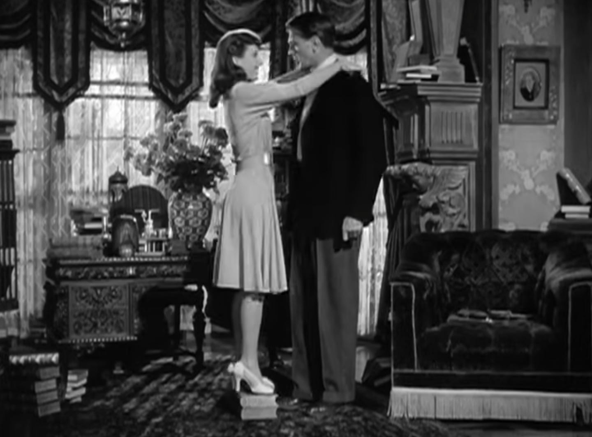

Welcome to The Film Around the Corner , a blog dedicated to reviewing and discussing the fun, weird, and often under-appreciated films of Hollywood's Golden Age.
James Stewart in Vivacious Lady (1938)
| Ball of Fire (1941) | Hollywood Party (1934) |  |
|
|---|

Eddie Cantor and Charlotte Greenwood in Palmy Days (1931)
All rights to the images used belong to their respective owners.
© Zoe Kaperonis 2024